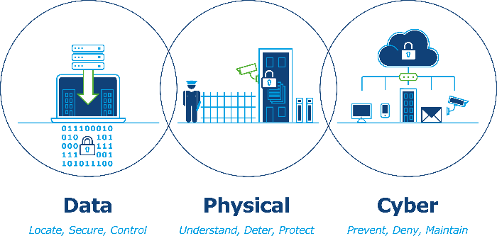

Cybersecurity in the health sector

Stephen Jenkins
Director
In the UK, our National Health Service (NHS) clients are becoming more ‘connected’. With the advance of the ‘internet of things’, automation and communications, the threat from a cyber-attack on business critical systems is becoming more likely.
Data has become a currency, with personal data being exceptionally lucrative. New legislations are holding organisations to account for the security of personal data with powers to impose significant fines on organisations if found in breach. The opportunity, therefore, for an external or internal threat to carry out these attacks for either personal gain or to damage an organisations reputation has significantly increased.
Ciaran Martin, the Head of the National Cyber Security Centre, has warned:
I think it is a matter of when, not if and we will be fortunate to come to the end of the decade without having to trigger a category one attack
- Head of National Cyber Security Centre
What’s happening and why?
The threat to the UK, its Critical National Infrastructure (CNI) and crowded spaces is increasing; the media is constantly reporting of physical, cyber-attacks and data breaches.
We have already seen a fairly simple cyber-attack have a huge impact on the NHS (WannaCry May 2017); this attack was not sophisticated but personified a cyber ‘virus’ as it spread uncontrollably across the NHS. Only the NHS trusts that had adhered to Government advice were unaffected.
A relatively unsophisticated attack which could have been prevented by following basic IT security best practice."
- NAO report on the NHS Wannacry incident; Sir Amyas Morse, comptroller and auditor-general of the NAO.
The NHS is part of our CNI; organisations within these sectors have a responsibility (which is enforced by the Centre for Protection of National Infrastructure (CPNI)) to ensure they have robust physical, cyber and data security policies, procedures and technical solutions in place to help prevent an attack. Nothing is 100% secure but adding ‘layers’ of security and having robust systems in place that protect critical business as usual (BAU) systems and data is sacrosanct.
But it is not just to our CNI where the threat has increased; we have unfortunately seen a rise, globally, of attacks on public and crowded spaces. These attacks are often difficult to prevent so the layers of protection around the built environment are critical to be able to minimise and contain an attack.
New Legislation – Cyber
To help prevent another ‘Wannacry’ the UK Government has introduced new legislation – The Network and information Systems (NIS) directive. The directive became effective on the 10 May 2018. This directive does not affect all CNI assets; this may change in the future as the various CNI sectors become more ‘aware’ of their cyber health. The Directive does affect what the UK Government has highlighted as Operators of Essential Services (OES).
These OES have been broken down into either whole or part CNI sectors and are:
- Drinking water - supply and distribution
- Energy – electricity, oil and gas
- Health
- Transport – maritime, air, rail, road
- Digital Service Providers (DSP) – TLD name registries, domain name service providers, internet exchange point operators.
Fundamentally there are four main objectives each OES must adhere to:
- Manage security risk
- Defending systems against cyber attack
- Detecting cyber security events
- Minimising the impact of cyber security incidents.
So What?
In May 2018, the Department of Health and Social Care (DHSC) released their guide for the NIS directive for the health sector in England. DHSC is responsible for overseeing the operation for the NIS Directive within the health sector with NHS digital responsible for the production of guidance for operators and technical support to the department. Failure to adhere to the directive may result in fines up to £17m.
Our challenge is to ensure that the health and care system nationally, regionally and locally is equipped to withstand and respond to cyber-attacks in an effective manner
- Lessons Learned review of the WannCry Ransomware Cyber-attack
Critical Timelines
There are a number of critical timeframes that are to be adhered to, these are:
- May 2018: NIS directive comes into effect and OESs come into scope automatically
- July 2018 (annually): Annual report of NIS incidents submitted for onward submission to the European Commission in August 2018
- November 2018: Sector specific guidance published. The Department for Transport and the DHSC have already produced their sector specific guidance
- November 2018 (biennially): Report detailing the number of OES and the thresholds for identification submitted to the EU by the SPOC
- May 2019: Annual review of the regulatory provisions of the NIS regulations.
- First year (May 18-19) OES are to:
- Have a clear picture of security of network and information security using the NIS directive cyber assessment framework or one produced by the competent authority
- Conduct analysis of system and existing security (technical and non-technical)
- Develop plans to reach security requirements.
The health sector is, understandably, a technologically advanced sector which relies heavily on IT systems and networks, often life saving situations.
But the sector is vast; over 80 NHS trusts and 603 health organisation and GPs were affected by the WannaCry incident, with a cost of £180,000 in emergency measures and more than £150m future investment in cyber security.
The NHS has 8,000 organisations (not all categorised as OES) that are registered with the NHS data security & protection toolkit and have to complete a cyber security self-assessment against the then data security standards – to date only three percent have completed.
New Legislation – Data
In addition, on the 25 May 2018, the General Data Protection Regulation (GDPR) came into effect as an EU wide regulation that has been adopted as UK Law; this law will remain in affect regardless of Brexit.
The regulation is to make all organisations, regardless of size or capability, accountable for how they use/store/access and share personal data. The regulation affects all businesses that deal in the EU whether an EU country or not. For the UK Government the Information Commissioner’s Office (ICO) is Policing the regulation; the ICO has the ability to fine organisations £18m or four percent of global turnover (whichever the greatest) if found to be in breach of GDPR.
Special Categories
Not only does the health sector have to comply with the GDPR, but most of the data it processes with come under the ‘Special’ category; it is likely the six of the eight special categories of data will be collected by the health sector in some shape or form. These will include:
- Race and ethnic origin
- Religious or philosophical beliefs
- Biometric data used to identify an individual
- Genetic
- Health
- Sexual preferences, sex life, and/or sexual orientation.
Because of this requirement, the health sector is likely to be under particular scrutiny to ensure they comply with the regulation.
A holistic approachThe health sector has some particular challenges- as well as complying with both new legislations. it is also likely to be specifically analysed by a number of Government organisations to ensure compliance.
Furthermore, the legislation will be implemented at a time when NHS capital spend is hugely constrained, so a targeted and considered response is required.
External and internal threats are a real problem. This includes physical, cyber and data security on new or existing, operational assets or the de-commission of old assets.
These are all intrinsically linked – a weakness in one will expose the other. Security needs to be looked at holistically:

At Turner & Townsend we have a dedicated health and security team who specialise in finding, structuring and securing data – from both external and internal threats. This includes physical, cyber and data security on new or existing, operational assets or the de-commission of old assets.